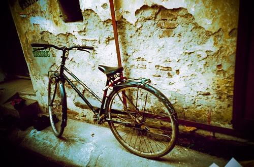
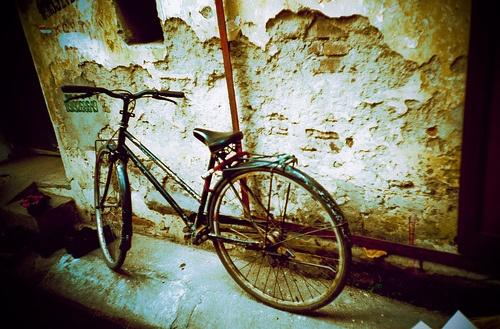
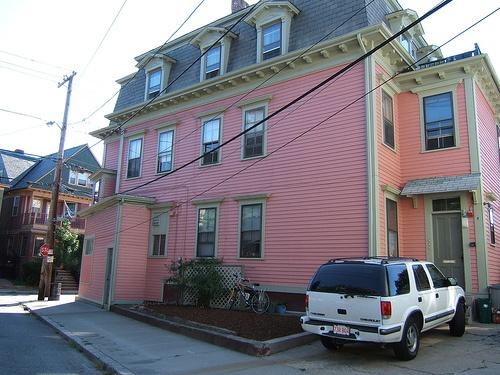
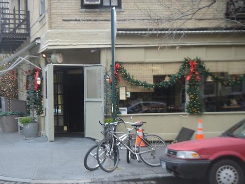
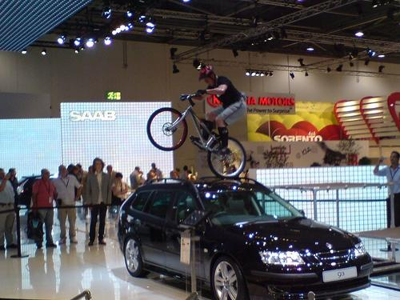
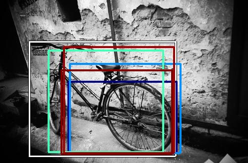
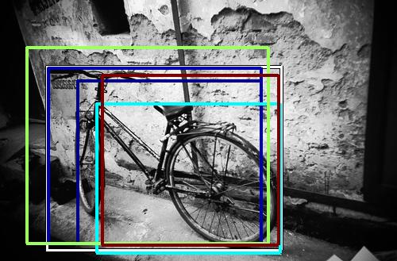
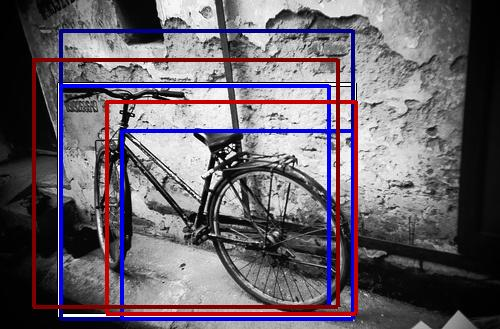
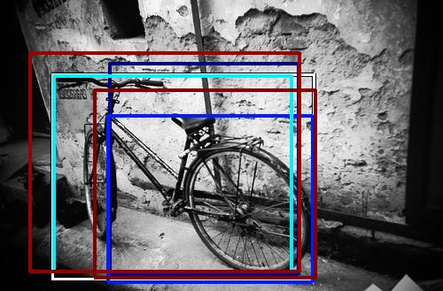

0.592786

0.595269

0.629654

0.660619

0.661878

0.675290

0.697325

0.702041
0.712221
0.731543
| Target image  |  0.592786 | 0.595269 | 0.629654 | 0.660619 | 0.661878 | 0.675290 | 0.697325 | 0.702041 |  0.712221 |  0.731543 |
| Target image  |  11341.717773 |  7374.804199 |  5234.843750 |  4883.948242 |  4453.752441 |  4389.980957 |  4118.595215 |  3614.658936 |  3499.753174 |  3230.514160 |
| Target image  |  13964.213867 |  11704.912109 |  6168.507812 |  4402.494141 |  4252.327637 |  4061.642578 |  3294.308105 |  3248.795654 |  3223.968750 |  3168.276123 |
| Target image  |  9368.977539 |  8164.986816 |  6027.710449 |  5759.564453 |  5107.578613 |  4703.681152 |  3960.459961 |  3930.947998 |  3676.802734 |  3383.265869 |
| Target image  |  13615.205078 |  6588.172852 |  5334.879883 |  5296.416992 |  5254.816406 |  5123.630859 |  5056.927734 |  4744.303711 |  4727.992188 |  4403.034668 |